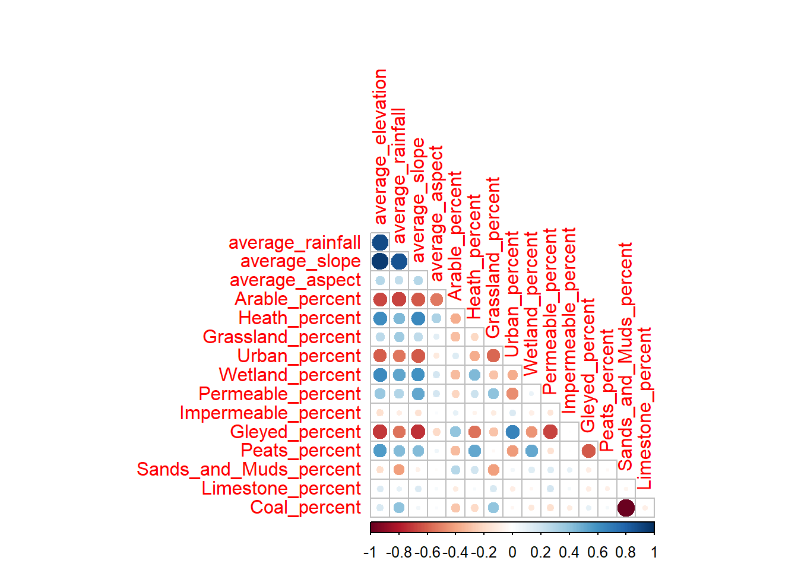
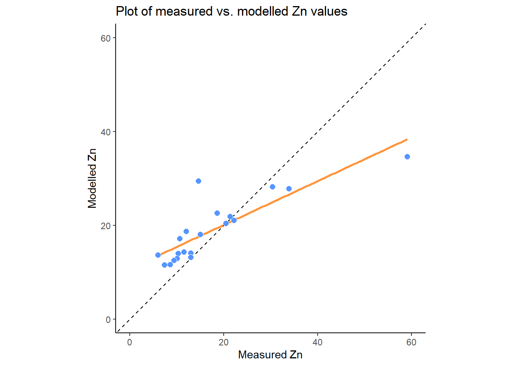

Chapter 11 Mersey V - Statistical analysis
In this final chapter, we will compare the information about catchment characteristics with the water quality data collected at each of the 70 monitoring stations. To begin, load the csv file created at the end of Task 6 (mersey_watersheds_ea.csv), saving to a new variable called watersheds_df:
# Reads completed file from csv
watersheds_df <- read.csv(here("output", "practical_2", "mersey_watersheds_ea.csv"))If you have any other variables in your R environment, these can be removed using rm().
11.1 Task 7: Model building
This data frame should contain the following 10 water quality indicators for each watershed:
- pH: acidity/alkalinity;
- SSC: suspended solids concentration (mg l−1);
- Ca: calcium (mg l−1);
- Mg: magnesium (mg l−1);
- NH4: ammonium (mg-N l−1);
- NO3: nitrate (mg-N l−1);
- NO2: nitrite (mg-N l−1);
- TON: total oxidised nitrogen (mg-N l−1);
- PO4: phosphate (mg-P l−1);
- Zn: zinc (μg l−1).
It should also contain the continuous derivatives (e.g. average elevation) and categorical derivatives (e.g. land cover percentage) for each watershed.
Note: some of your calculated percentages may not add up to 100%. In Task 4, we reclassified only the most important categorical variables. These are known to have the greatest impact of river hydrochemistry (e.g. urban areas, farmland). While other land cover categories are found within each watershed, these typically account for only a small percentage of the total area and have a limited effect on the river environment. These categories have been excluded to simplify the analysis.
11.1.1 An introduction to linear models in R
It is now time to examine the relationships between river water quality and catchment metrics. The key model outputs that are ultimately required for the assessment are:
Regression equations for each water quality variable (dependent variable; n = 10) and the key explanatory catchment characteristics (independent variables; n = 16).
Associated model values (R2, p value).
Remember, you don’t have to run every code block shown below, but you can do so if it would help your understanding.
The simplest way to run a linear regression in R is to use the lm() function, an example of which is shown below, storing the output in model (you can change this name to reflect the input variables):
We have defined the data frame being used (data = watersheds_df) and the input variables from that data frame. This is achieved by including their column names, shown here:
## [1] "Seed_Point_ID" "FID" "EA_ID"
## [4] "Group" "Ph" "SSC"
## [7] "Ca" "Mg" "NH4"
## [10] "NO3" "NO2" "TON"
## [13] "PO4" "Zn" "area"
## [16] "count" "average_elevation" "average_rainfall"
## [19] "average_slope" "average_aspect" "Arable"
## [22] "Heath" "Grassland" "Urban"
## [25] "Wetland" "Permeable" "Impermeable"
## [28] "Gleyed" "Peats" "Sands_and_Muds"
## [31] "Limestone" "Coal" "Arable_percent"
## [34] "Heath_percent" "Grassland_percent" "Urban_percent"
## [37] "Wetland_percent" "Permeable_percent" "Impermeable_percent"
## [40] "Gleyed_percent" "Peats_percent" "Sands_and_Muds_percent"
## [43] "Limestone_percent" "Coal_percent"Input variables in the formula are separated by ~, where the variable to the left is the dependent variable (Zn) and the variable to the right is an independent variable (average_elevation). We can, however, include multiple independent variables to perform multiple linear regression. This is achieved as follows, where additional independent variables are separated by +:
# Fits a linear model
model <- lm(formula = Zn ~ average_elevation + Grassland_percent, data = watersheds_df)We can then assess the model output using the summary function:
##
## Call:
## lm(formula = Zn ~ average_elevation + Grassland_percent, data = watersheds_df)
##
## Residuals:
## Min 1Q Median 3Q Max
## -17.358 -8.324 -3.055 3.915 43.884
##
## Coefficients:
## Estimate Std. Error t value Pr(>|t|)
## (Intercept) 33.55321 3.41959 9.812 1.37e-14 ***
## average_elevation -0.02018 0.01179 -1.712 0.09156 .
## Grassland_percent -0.22543 0.06846 -3.293 0.00159 **
## ---
## Signif. codes: 0 '***' 0.001 '**' 0.01 '*' 0.05 '.' 0.1 ' ' 1
##
## Residual standard error: 11.86 on 67 degrees of freedom
## Multiple R-squared: 0.2415, Adjusted R-squared: 0.2189
## F-statistic: 10.67 on 2 and 67 DF, p-value: 9.512e-05For this set of independent variables, we have an R2 of 0.24 (Multiple R-squared: 0.2415) and a model p value of < 0.01 (p-value: 9.512e-05).
The model coefficients for the independent variables are described above, where * denotes p values < 0.05 (95% probability) and ** denotes p values < 0.01 (99% probability). As the coefficients are very small, they are presented in scientific notation. These can be converted to numeric (non-scientific) format using the following code:
## [1] "-0.0002096"We can supply multiple values to the format function by creating a vector:
When you’re happy you understanding the formatting of the
lmfunction, move on to the next section.
11.1.2 Training vs. Testing
One limitation of the above approach is that our dataframe (watersheds_df) contains observations from all 70 EA monitoring stations.
When performing statistical analysis, it is common practice to split any dataset into:
- a training subset, which is used to create the model(s).
- a testing subset, which is used to evaluate the model(s).
Subsetting our data in this way allows models to be evaluated more rigorously. Many models perform well “in-sample” but poorly “out-of-sample” when evaluated against independent data (i.e. the testing subset). This is commonly referred to as “over-fitting”.
Training and testing subsets are usually defined randomly, with an approximate ratio of 70:30 (although this varies). However, and to ensure reproducibility, this step has been completed for you: the watersheds_df dataframe contains a group variable denoting which monitoring sites belong to the training and testing subsets.
Run the code above to create
trainingandtestingdataframes:
# Extracts training dataset, comprising 50 observations (~70%)
training <- subset(watersheds_df, Group == "Training")
# Extracts training dataset, comprising 20 observations (~30%)
testing <- subset(watersheds_df, Group == "Testing") Before you move on to the next section, can you think of any limitations of this approach?
Hints: How important is the training-testing ratio? How are training-testing subsets created?
11.1.3 Variable selection strategies
An addition weakness of the above approach is that we have manually defined the independent variables of interest (average_elevation + Grassland_percent). For exploratory analysis, however, we may not know which are the most important variables. Perhaps there is a combination of independent variables which produces a better model fit (e.g. R2 > 0.24)?
Determining which variables to include/exclude from a model is a very difficult problem, which has resulted in many different variable selection strategies. Common approaches include expert opinion and/or theory, partial least squares (PLS) regression, implemented in PLS, Least Absolute Shrinkage and Selection Operator (LASSO), implemented in glmnet and LARS, as well as elastic net methods and ridge regression, also implemented in glmnet. You may want to explore some of these more complex approaches for your dissertation.
For our analysis, we are going to use a relatively simple method known as Stepwise Regression, implemented in the MASS package. This works by including all the relevant independent variables in the analysis and then selecting those with the greatest explanatory power.
However, we don’t necessarily want to test all model variables. We would probably want to exclude the categorical counts (e.g. Arable, Heath, …) as these factors are already represented by the normalised variables (e.g. Arable_percent, Heath_percent, …), as well as any IDs or geometry variables (area). In general, we are only interested in testing the continuous derivatives (column names starting with average_) and the normalised categorical derivatives (column names ending in _percent).
Rather than typing out the columns of interest manually, we are going to use the select function from the dplyr package to do so:
# Creates a vector of column names, including only those which contain "average" or "percent"
factors <- colnames(watersheds_df %>% dplyr::select(contains(c("average", "percent"))))
# Prints to console
factors## [1] "average_elevation" "average_rainfall" "average_slope"
## [4] "average_aspect" "Arable_percent" "Heath_percent"
## [7] "Grassland_percent" "Urban_percent" "Wetland_percent"
## [10] "Permeable_percent" "Impermeable_percent" "Gleyed_percent"
## [13] "Peats_percent" "Sands_and_Muds_percent" "Limestone_percent"
## [16] "Coal_percent"Run the above code. Note, the formatting of
dplyr::selectmay be slightly confusing but it is necessary because there is also aselectfunction in theMASSpackage. Here, we are telling R to useselectfromdplyr.
Using this vector of column names, we are going to create a new data frame (called variables) containing only the independent variables of interest. Crucially, this is only for the training dataset:
Run the above code and use
head()to inspect the results.
11.1.4 Testing for collinearity
Before we use this dataset to investigate the controls on water quality, it is a good idea to test for collinearity, which occurs when independent variables in our regression model are highly correlated to each other. This is a common problem in regression analysis. If you are interested in the factors which influence \(A\), you might perform a regression involving \(B\) and \(C\). However, if \(B\) and \(C\) are highly correlated (as \(B\) increases, so too does \(C\)), how do you know which is important?
To test for this, we can create a correlation matrix, using the cor function available in the base R stats package, and then visualise this using the corrplot() function from the corrplot package:
# Create correlation matrix
cor_matrix <- cor(variables)
# Visualise using corrplot()
corrplot(cor_matrix, method = 'circle',
type = 'lower', diag = FALSE)
You can modify the design to show additional information, such as using
method = 'number'to include the correlation values (1 = perfect positive correlation, 0 = no correlation, -1 = perfect negative correlation). Further information available here
Overall, we can see evidence of clear collinearity, in particular between the topographic variables, with high positive correlations between average_slope, average_elevation and average_rainfall. This reflects the fact that the higher elevation catchments on the periphery of the Mersey Basin tend to be steeper and wetter (i.e., orographic rainfall) than their low elevation counterparts. Fundamentally, these different variables are closely related, so including them all in the model means we are double- or triple-counting the effects of topography.
In addition, we can also see evidence of collinearity with other catchment characteristics. For example, average_slope is negatively correlated with the proportion of arable and urban land, and positively correlated with wetland, heath and peat coverage.
Can you think why we might see the above pattern?
We can also see evidence of high collinearity between Coal and Sands_and_Muds, which reflects their spatial distribution across the basin. You could visualise this by plotting the bedrock raster you created in Mersey IV. As there are only three bedrock categories, and limestone is rare, high coverage of Coal has to be associated with low coverage of Sands_and_Muds (and vice versa).
Based on the above reasoning, we can be justified in removing variables with evidence of collinearity (average_slope, average_elevation, average_rainfall, Coal). We can achieve this using the select function from the dplyr package, which we used previously, but modified slightly to exclude variables, rather than retain them:
# Remove colinear variables
variables <- variables %>% dplyr::select(-contains(c("slope", "rainfall", "elevation", "Coal")))Run the above to remove collinear variables. You may want to produce a new correlation matrix (
corrplot()) to investigate the effects.
11.1.5 Stepwise regression
With our new filtered dataset, we can now combine this data frame (cbind) with a dependent variable of interest; we will use zinc (Zn) as an example. Our new dataframe will be called model_df as it contains all the variables (dependent + independent) required for multiple linear regression. Note: by default, cbind will (somewhat unhelpfully) rename input column names e.g. Zn will become watersheds_df$Zn. The code below specifies the new column name as Zn (Zn =) for readability:
# Column bind the Zn column with the independent variables from the training dataset
model_df <- cbind(Zn = training$Zn, variables)When complete, we can then run a new model, making sure to update the data frame used (data = model_df) and updating the formula to Zn ~ .. This denotes that all other data frame columns will be included as independent variables (a useful time saver!):
# Fits a linear model, including all other columns (~.) as independent variables
zn_model <- lm(formula = Zn ~ ., data = model_df)When you’re happy you understand the
lmsyntax, combine the two dataframes, run the linear model and inspect the output usingsummary(). This should resemble the following:
##
## Call:
## lm(formula = Zn ~ ., data = model_df)
##
## Residuals:
## Min 1Q Median 3Q Max
## -14.651 -5.609 -1.941 2.340 32.979
##
## Coefficients:
## Estimate Std. Error t value Pr(>|t|)
## (Intercept) -1.051e+02 4.517e+02 -0.233 0.817329
## average_aspect -4.239e-02 5.120e-02 -0.828 0.412966
## Arable_percent 5.030e-01 2.635e-01 1.909 0.064073 .
## Heath_percent 7.310e-01 3.115e-01 2.347 0.024407 *
## Grassland_percent 4.870e-01 2.629e-01 1.853 0.071926 .
## Urban_percent 1.045e+00 2.820e-01 3.704 0.000689 ***
## Wetland_percent 4.388e-01 2.738e-01 1.603 0.117540
## Permeable_percent 7.853e-01 4.580e+00 0.171 0.864798
## Impermeable_percent 1.588e-01 4.592e+00 0.035 0.972608
## Gleyed_percent 7.545e-01 4.578e+00 0.165 0.869991
## Peats_percent 8.370e-01 4.594e+00 0.182 0.856443
## Sands_and_Muds_percent 1.126e-03 5.797e-02 0.019 0.984603
## Limestone_percent 1.681e-02 3.198e-01 0.053 0.958354
## ---
## Signif. codes: 0 '***' 0.001 '**' 0.01 '*' 0.05 '.' 0.1 ' ' 1
##
## Residual standard error: 11.14 on 37 degrees of freedom
## Multiple R-squared: 0.5143, Adjusted R-squared: 0.3568
## F-statistic: 3.265 on 12 and 37 DF, p-value: 0.002776Our overall model fit (R2) is \(0.5143\) which indicates that the independent variables explain ~51% of variability in the dependent variable. Our model is statistically significant, here defined as having a p value < 0.05. When values are very small (e.g. p < 0.0005), we would typically present these as a discrete value e.g. p < 0.05, < 0.01, < 0.001. Generally, we only use models in which we can be 95% confident or higher (i.e. significance level of 0.05 or less).
However, it is important to note that p values should be not be considered in isolation and need to be interpreted carefully. For statistical reviews of using and interpreting p values, see Goodman (2008) and Andrade (2019). For a broader overview, see the Nature commentary by Amrhein et al. (2019), as well as a summary article by Vox.
In addition, while the model is significant, it contains all the independent variables, some of which probably have no effect on Zinc concentrations. We can filter out unimportant variables using the step.AIC function from the MASS library:
# Stepwise regression model
step.model <- stepAIC(zn_model, # Input linear model
direction = "both",
trace = FALSE, # Print out intermediate results?
scope = NULL,
k = 2) Helpfully, this takes the output of the lm model (zn_model) with no need for any additional data wrangling. The following are important parameters:
direction = "both":- Determines the method used, either forward or backward stepwise regression, or a mixture of both.
- “Forward” begins with a model with no variables and then starts adding the most significant variables, stopping when there are no more significant variables.
- “Backward” begins with a model with all variables and then starts removing the least significant variables, stopping when only significant variables are remaining.
- “Both” includes both of the above, allowing for variables to be added/removed at each step.
scope:- Defines the range of models examined in the stepwise search (currently set to
NULL).
- Defines the range of models examined in the stepwise search (currently set to
k = 2:- The number of degrees of freedom used for the penalty i.e. for determining whether variables are significant or not. Although any value can be used here, it is typical to use either \(k = 2\), which is equivalent to the Akaike information criterion (AIC), or \(k = log(n)\), which is equivalent to the Bayesian information criterion (BIC), where
nis the number of data points in the model (\(n = 50\)). Both the AIC and BIC can be used to assess the relative quality of statistical models.
- The number of degrees of freedom used for the penalty i.e. for determining whether variables are significant or not. Although any value can be used here, it is typical to use either \(k = 2\), which is equivalent to the Akaike information criterion (AIC), or \(k = log(n)\), which is equivalent to the Bayesian information criterion (BIC), where
Run the above model (
direction = "both"andk = 2) and print the output usingsummary():
##
## Call:
## lm(formula = Zn ~ Arable_percent + Heath_percent + Grassland_percent +
## Urban_percent + Wetland_percent + Permeable_percent + Gleyed_percent +
## Peats_percent, data = model_df)
##
## Residuals:
## Min 1Q Median 3Q Max
## -15.873 -5.535 -2.071 3.257 33.422
##
## Coefficients:
## Estimate Std. Error t value Pr(>|t|)
## (Intercept) -102.2893 44.3771 -2.305 0.026303 *
## Arable_percent 0.5686 0.2330 2.441 0.019061 *
## Heath_percent 0.7006 0.2849 2.459 0.018242 *
## Grassland_percent 0.4910 0.2349 2.090 0.042815 *
## Urban_percent 1.0569 0.2597 4.069 0.000209 ***
## Wetland_percent 0.4388 0.2527 1.737 0.089966 .
## Permeable_percent 0.6677 0.3972 1.681 0.100341
## Gleyed_percent 0.6332 0.3923 1.614 0.114250
## Peats_percent 0.7313 0.4086 1.790 0.080837 .
## ---
## Signif. codes: 0 '***' 0.001 '**' 0.01 '*' 0.05 '.' 0.1 ' ' 1
##
## Residual standard error: 10.68 on 41 degrees of freedom
## Multiple R-squared: 0.5051, Adjusted R-squared: 0.4086
## F-statistic: 5.231 on 8 and 41 DF, p-value: 0.0001532As you can see above, we have now produced a more parsimonious model, but there are still many independent variables (\(n = 8\)), some of which might be less important. We can address this in a few ways:
Use a more strict criteria for determining significance i.e., shifting from AIC (
k = 2) to BIC (k = log(n))Updating the model
scope, which defines the range of models examined in the stepwise search. Rather than, for example, building from an empty model and progressively adding variables (i.e.,direction = "forward"), we can give stepwise a headstart by performing the stepwise search from an initial model.
To achieve this, we are going to use the ols_step_all_possible() function from the oslrr package, which takes a linear model and fits all possible regressions. For a model with three independent variables (\(A, B, C\)), this would include six models: \(A\), \(B\) and \(C\) alone, \(A+B\), \(A+C\) and \(B+C\). As the number of independent variables (\(k\)) increases, the number of possible combinations increases by a factor of \(2^k\). For our reduced dataset, this is equivalent to \(2^{12}\) which is \(4096\) possible models!
In this case, we are going to use ols_step_all_possible() to perform univariable linear regression, which is achieved by setting max_order = 1, and utilising the full model in the calculation:
# Perform univariable regression for all independent variables
k <- ols_step_all_possible(zn_model, max_order = 1)
# Print summary
print(k)## Index N Predictors R-Square Adj. R-Square Mallow's Cp
## 5 1 1 Urban_percent 0.364259451 0.3510148559 0.293201616
## 4 2 1 Grassland_percent 0.174429003 0.1572296068 0.083658529
## 9 3 1 Gleyed_percent 0.104383030 0.0857243436 0.022395861
## 7 4 1 Permeable_percent 0.067827513 0.0484072532 -0.004844245
## 1 5 1 average_aspect 0.027677488 0.0074207688 -0.078097077
## 6 6 1 Wetland_percent 0.021903272 0.0015262568 -0.030741536
## 10 7 1 Peats_percent 0.020526736 0.0001210431 -0.052335619
## 2 8 1 Arable_percent 0.014586856 -0.0059425843 -0.097833833
## 8 9 1 Impermeable_percent 0.004774494 -0.0159593704 -0.103020493
## 12 10 1 Limestone_percent 0.003867060 -0.0168857093 -Inf
## 11 11 1 Sands_and_Muds_percent 0.003466858 -0.0172942487 -0.075015980
## 3 12 1 Heath_percent 0.002184144 -0.0186036866 -0.057947143Run the above code to produce univariable regressions. You can modify
max_orderto investigate different combinations of variables, although this will increase the code run time. Remember to setmax_orderback to \(1\) for subsequent analysis.
Based on the above approach, we can evaluate the relative performance of the different models using R2, adjusted R2, and other criteria. The best performing univariable model utilises Urban_percent, with an R2 of \(~0.36\). As the best explanatory variable, we are going to use this as the starting point for our new stepwise search.
The code below is very similar to our previous use of stepwise, but this time includes the more strict BIC threshold for determining significance (k = log(n)), and utilises the scope argument to define the start point for the search (lower = ~Urban_percent) and the potential end point (upper = ~zn_model).
To summarise, we are starting with a simple univariable model, in which zinc concentrations are solely related to the urban land cover percentage, and then progressively searching through other combinations of models, adding or removing variables (direction = "both"), to find the best outcome. The quality of models is assessed by BIC, which evaluates model fit while penalising unnecessary variables. The upper limit is the model containing all the variables (upper = ~zn_model), and while this would have the highest model fit (R2), it is likely to have unnecessary variables and would be excluded based on BIC.
# Updated stepwise regression model, using BIC and scope
step.model <- stepAIC(zn_model, # Input linear model
direction = "both",
trace = FALSE,
# Utilising the scope argument
scope = list(lower = ~Urban_percent, upper = zn_model),
# Utilising the more strict BIC [k = log(n)], rather than AIC [k = 2]
k = log(nrow(training)))
# Print summary
summary(step.model)##
## Call:
## lm(formula = Zn ~ Urban_percent, data = model_df)
##
## Residuals:
## Min 1Q Median 3Q Max
## -17.217 -6.032 -3.555 6.269 40.717
##
## Coefficients:
## Estimate Std. Error t value Pr(>|t|)
## (Intercept) 11.31283 2.28486 4.951 9.52e-06 ***
## Urban_percent 0.43389 0.08274 5.244 3.49e-06 ***
## ---
## Signif. codes: 0 '***' 0.001 '**' 0.01 '*' 0.05 '.' 0.1 ' ' 1
##
## Residual standard error: 11.19 on 48 degrees of freedom
## Multiple R-squared: 0.3643, Adjusted R-squared: 0.351
## F-statistic: 27.5 on 1 and 48 DF, p-value: 3.491e-06Run the above code, making sure you understanding the effects of
kandscope.
11.1.6 Interpreting results
Our original model, based upon 12 independent variables, had an R2 of 0.514. Our second model, using a simple stepwise regression (k = 2, scope = NULL), produced a similar output (R2 = 0.505), with a reduced but still sizeable number of independent variables. Our final model, employing a more strict threshold for significance (k = log(n)) and a starting point for the stepwise search, produced an extremely parsimonious model, with just one independent variable, but at the cost of a reduction in model fit (R2 = 0.364).
These results raise an important question: how should model parsimony be weighted against model performance?
This is a question you will have to answer in your own research, as you select a model from a suite of options and exclude others.
In general, we prefer models with the minimum number of parameters (independent variables), so for our subsequent analysis, we will follow the ‘strict’ approach outlined above. These models require fewer assumptions, less intensive data collection, can be applied more confidently to new data sets/locations, and are often easier to interpret. This principle of model parsimony is based upon Occam’s Razor: “other things being equal, simpler explanations are generally better than more complex ones”.
Our model coefficients are now as follows:
intercept= 11.31283, p = 9.52e-06 (p < 0.01)Urban_percent= 0.43389, p = 3.49e-06 (p < 0.01)
Coefficients are important because they are used in regression equations, which can then be used to predict values.
The general format for a regression equation is as follows:
\[
y = a + (b_1 \cdot x_1) + (b_2 \cdot x_2) + (b_n \cdot x_n)
\]
where a is the constant (intercept) value, and b is the coefficient of x.
For our Zn model above, we can define our regression equation (presented using sensible data precision) as:
\[ Zn = 11.31 + (0.43 \cdot Urban \: percent) \] Well done! You have now calculated a regression which links the dependent variable (Zn) to an independent variable, in this case the percentage of urban land cover.
For your assessment, we would like you to explain the regression results, linking to hydrological processes and literature. Think about specific sources of pollution, transport pathways, types of flow…
11.2 Task 8: Model evaluation
Having created a statistical model, it is necessary to evaluate its performance. Comparison plots of measured vs. modelled (or predicted) values are one common way to assess model quality, alongside other metrics such as root-mean-square error (RMSE), normalised root-mean-square-error (nRMSE), Q-Q plots, or histograms of model residuals. You may want to explore some of these for the assessment.
To calculate modelled values, we can use the predict() function, taking the model variable (step.model) as the input, rather than re-creating the above equation manually in code, and using our testing dataframe for the newdata argument:
# Predict Zn values based upon stepwise model, saving to testing dataframe
testing$predicted_Zn <- predict(step.model, newdata = testing)Ifnew_data is not defined, the predict function uses the fitted values for prediction i.e. the training data used to construct the model (see here).
Run the above code block to predict Zn concentrations in the testing dataset, based on the regression model produced from the training dataset.
These values could be used to calculate RMSE or other metrics (nRMSE) using your own code or additional packages (e.g. Metrics);
\[ RMSE = \sqrt{mean(measured\:values - modelled\:values)^2} \]
Plots of measured vs. modelled values (as well as Q-Q plots and histograms) can be created in ggplot2. Here is an example:
# ggplot of measured vs. modelled (predicted) NO2 values
zn_plot <- ggplot(data = testing, aes(x = Zn, y = predicted_Zn)) +
# Adding a linear regression ("lm"), removing standard error bars (se = FALSE)
geom_smooth(method = "lm", se = FALSE, colour="#FF953C") +
# Adds a 1:1 line for comparison
geom_abline(intercept = 0, slope = 1, lty = "dashed") +
# Adds the point data, modifying the shape, size, colour and fill
geom_point(shape = 21, colour = "white", fill = "#5695FF", size = 2.5) +
# Setting the theme and aspect ratio
theme_classic() +
theme(aspect.ratio = 1) +
# Axis limits
scale_x_continuous(limits = c(0,60)) +
scale_y_continuous(limits = c(0,60)) +
# Add axis labels and a title
labs(x = Measured~Zn, y = Modelled~Zn,
title = Plot~of~measured~vs.~modelled~Zn~values)
zn_plot
Does the regression line match the 1:1 line? Is there any evidence of under- or over-prediction? Are there any outliers? What types of errors can you identify?
You could also assess this relationship statistically, using linear regression:
# Linear regression of measured vs. modelled Zn values
prediction_model <- lm(formula = Zn ~ predicted_Zn, data = testing)
# Print summary statistics
summary(prediction_model)##
## Call:
## lm(formula = Zn ~ predicted_Zn, data = testing)
##
## Residuals:
## Min 1Q Median 3Q Max
## -19.0259 -1.8266 0.9415 1.9784 17.4476
##
## Coefficients:
## Estimate Std. Error t value Pr(>|t|)
## (Intercept) -11.7003 4.5105 -2.594 0.0183 *
## predicted_Zn 1.5450 0.2259 6.838 2.12e-06 ***
## ---
## Signif. codes: 0 '***' 0.001 '**' 0.01 '*' 0.05 '.' 0.1 ' ' 1
##
## Residual standard error: 6.657 on 18 degrees of freedom
## Multiple R-squared: 0.7221, Adjusted R-squared: 0.7066
## F-statistic: 46.76 on 1 and 18 DF, p-value: 2.121e-06How well does our Zn model perform on the testing dataset, based on the above graphs/statistics? Is out-of-sample performance comparable to in-sample performance?
To finish the practical and to prepare for the assessment:
Replicating the above approaches, calculate regression equations based on stepwise linear regression for all 10 water quality indicators (NO2, pH, SSC, Ca, Mg, NH4, NO3, TON, PO4, Zn).
Save the relevant model coefficients and the R2 and p values for each equation. These should be stored in a single table for the assessment.